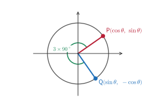
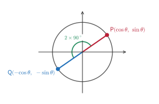
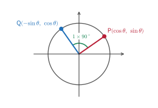

ホーム ＞ 数学II ＞ 一般角と三角関数のグラフ
別冊練習問題 9 の解答 θ+nπ/2 の三角関数の変換
(1) \(\sin\left(\theta+\dfrac{7\pi}{2}\right)\) を、\(\sin\theta\) または \(\cos\theta\) を使って表せ。
7 を使って
単位円の点 \(P(\cos\theta,\ \sin\theta)\) を、原点のまわりに \(3\times90^\circ\) 回した点を \(Q\) とする。\(Q\) の \(y\) 座標が \(\sin\left(\theta+\dfrac{3 \pi}{2}\right)\) である。

\(\sin\left(\theta+\dfrac{7 \pi}{2}\right)\) の周期・対称性を使う。2π ごとに戻るので \(\dfrac{7\pi}{2}\) を \(\dfrac{3\pi}{2}\) としてよい。
公式を適用
\[\sin\left(\theta+\dfrac{3 \pi}{2}\right)=- \cos{\left(\theta \right)}\]
【答案】
\[- \cos{\left(\theta \right)}\]答
(2) \(\sin\left(\theta+\dfrac{6\pi}{2}\right)\) を、\(\sin\theta\) または \(\cos\theta\) を使って表せ。
6 を使って
単位円の点 \(P(\cos\theta,\ \sin\theta)\) を、原点のまわりに \(2\times90^\circ\) 回した点を \(Q\) とする。\(Q\) の \(y\) 座標が \(\sin\left(\theta+\pi\right)\) である。

\(\sin\left(\theta+3 \pi\right)\) の周期・対称性を使う。2π ごとに戻るので \(\dfrac{6\pi}{2}\) を \(\dfrac{2\pi}{2}\) としてよい。
公式を適用
\[\sin\left(\theta+\pi\right)=- \sin{\left(\theta \right)}\]
【答案】
\[- \sin{\left(\theta \right)}\]答
(3) \(\sin\left(\theta+\dfrac{9\pi}{2}\right)\) を、\(\sin\theta\) または \(\cos\theta\) を使って表せ。
9 を使って
単位円の点 \(P(\cos\theta,\ \sin\theta)\) を、原点のまわりに \(1\times90^\circ\) 回した点を \(Q\) とする。\(Q\) の \(y\) 座標が \(\sin\left(\theta+\dfrac{\pi}{2}\right)\) である。

\(\sin\left(\theta+\dfrac{9 \pi}{2}\right)\) の周期・対称性を使う。2π ごとに戻るので \(\dfrac{9\pi}{2}\) を \(\dfrac{\pi}{2}\) としてよい。
公式を適用
\[\sin\left(\theta+\dfrac{\pi}{2}\right)=\cos{\left(\theta \right)}\]
【答案】
\[\cos{\left(\theta \right)}\]答